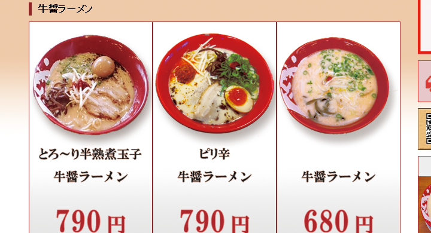
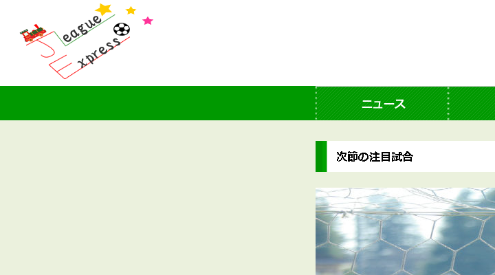
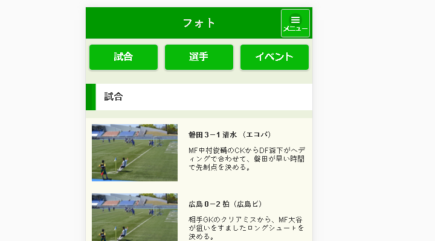

Portfolio
ラーメンことこと屋

| 製作期間 | 4ヶ月 |
|---|---|
| 製作人数 | 1人 |
| 使用ソフト | Photoshop,Fireworks, Dreamweaver,Brackets,Cacoo |
| きっかけ |
HTML・CSS・FW・DW・PS・AIの基礎を経て、Webサイト制作の授業を終えて、初めて1人で制作したサイトです。 最初は自分がよくないと思うサイトを探し、自分ならどうリニューアルするかというテーマで制作しました。 |
| ポイント |
小さい店なのでメニューの種類が少ないと思われるかもしれませんがメニューは豊富です。 トップページはお店の情報や、イベント情報に留め、ラーメンに興味をもってもらえるようにメインビジュアルやバナーの写真を工夫しました。 |
| 苦労したところ |
サイトを作り始める前にユーザーの分析や、どのターゲット層に向けて制作するのかなど、Webサイト制作前の作業に時間がかかりました。 コーディングは、HTMLのタグやCSSの基礎は抑えたので大丈夫だろうと思っていました。しかし、レイアウトが崩れてしまうことが多く、悩むこともありました。 |
J.League Express

| 製作期間 | 3ヶ月 |
|---|---|
| 製作人数 | 1人 |
| 使用ソフト | Photoshop,Fireworks, Dreamweaver,Illustrator Brackets,Cacoo |
| きっかけ |
サッカー情報サイトは数多くあります。しかし、どのサイトも今話題の代表選手や試合で活躍した選手を大々的に取り上げているのがほとんどです。 当サイトでは若手を中心に、これから代表入りできるようなポテンシャルある選手を取り上げたら面白いのではないかと思いました。 |
| ポイント |
なるべく若手中心の試合やニュースをピックアップするようにしました。 選手が若いうちから注目し、その選手が活躍すれば思い入れがより一層強くなると思います。 お見入れが強くなればなるほどスタジアムへ足を運んで貰う機会が多くなることでしょう。 |
| 苦労したところ | サイト設計で、現存するサッカー情報サイトと被らないようにするのに苦労しました。 どうすればただのニュースサイトにならずに、若手に興味をもってもらえるのかというところが難しかったです。 |
J.League Express Mobile

| 製作期間 | 2ヶ月 |
|---|---|
| 製作人数 | 1人 |
| 使用ソフト | Photoshop,Fireworks, Dreamweaver,Brackets |
| きっかけ |
J.League Expressのスマートフォンサイトです。 多くのサイトはPCサイトの他にタブレット用、スマートフォン用のサイトがあります。これからはスマートフォン用サイトが主流になると思い、今回はJQuery Mobileでスマートフォン用のサイトを制作しました。 |
| ポイント |
PCサイトとは違い表示するコンテンツ数減らしました。 PCサイトと同じコンテンツ数ではスクロールさせてしまう回数が多くなってしまいます。 スマートフォンの操作性を考慮し、縦に長いコンテンツは収納し、横に長いコンテンツはタブ表示にしました。 |
| 苦労したところ | 短い文章でコンテンツの魅力をどうやったら伝えることができるか悩みました。 また、レイアウトでは横幅が狭いためどうしても縦に長くなってしまいます。jQuery MobileのどのGUIを使って、コンテンツ表示をしたらいいのか考えるのに時間がかかりました。 |